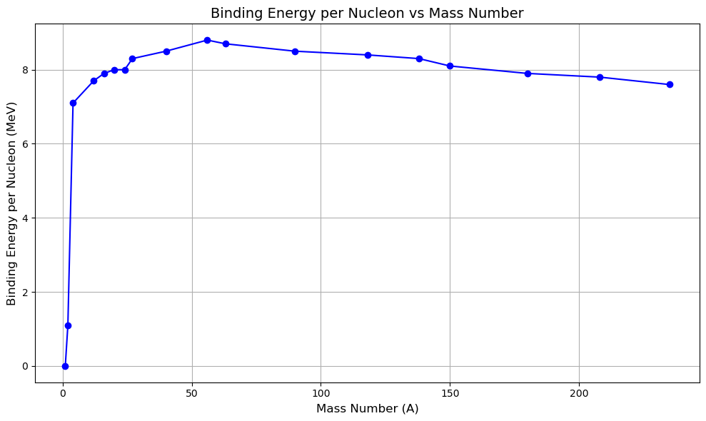
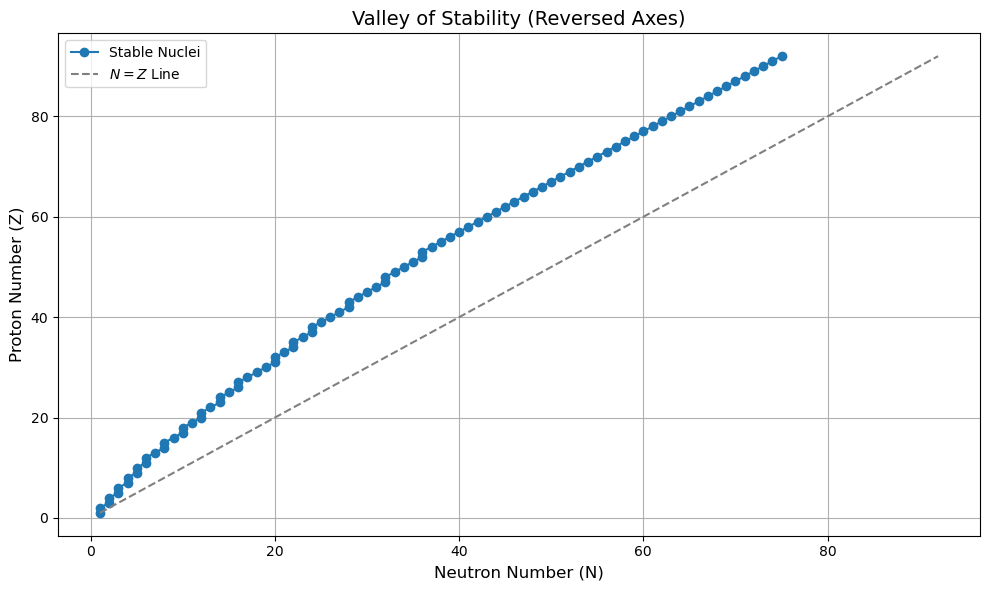

C8.5 Nuclear Structure#
C8.5.1 Motivation#
At the heart of every atom lies a tiny, dense core known as the nucleus. While atomic physics explains how electrons orbit nuclei and determine chemical properties, the structure of the nucleus itself governs entirely different phenomena—ranging from the stability of elements to the immense energy released in nuclear reactions.
Understanding nuclear structure is essential for many areas of physics, including:
Energy production, both in nuclear reactors and stars.
Medical applications, such as radioisotopes in imaging and cancer treatment.
Fundamental physics, as the nucleus is governed by the strong nuclear force—one of nature’s four fundamental interactions.
Particle physics and astrophysics, where nuclear reactions drive stellar evolution and element synthesis.
Why do some nuclei last billions of years while others decay in seconds? Why do certain isotopes exist while others do not? What is the role of neutrons in a stable nucleus? These are some of the central questions that nuclear structure helps us answer.
This note introduces the basic features of nuclear structure, the nuclear binding force, and how we characterize nuclei using mass number, charge, and neutron count.
C8.5.2 Basic Nuclear Properties#
An atomic nucleus consists of protons and neutrons, collectively called nucleons.
Number of protons: \(Z\) (also defines the atomic number and element)
Number of neutrons: \(N\)
Total number of nucleons: \(A = Z + N\) (called the mass number)
A nucleus is represented as:
For example, uranium-238 is written as \({}^{238}_{92}\text{U}\), with \(Z = 92\) protons and \(N = 146\) neutrons.
C8.5.3 Nuclear Forces#
The Strong Nuclear Force#
Short-range: acts over distances \(\lesssim 2 \, \text{fm}\)
Attractive between all nucleons (proton–proton, neutron–neutron, proton–neutron)
Stronger than Coulomb repulsion at short distances
Saturates: each nucleon only interacts with nearby nucleons
The Coulomb Force#
Repels protons due to their positive charge
Weakens nuclear binding as \(Z\) increases
These competing forces determine the stability of a nucleus.
C8.5.4 Binding Energy#
The binding energy of a nucleus is the energy required to disassemble it into its individual protons and neutrons.
From Einstein’s mass-energy equivalence:
We define binding energy per nucleon:
This value typically:
Peaks around iron (\(A \approx 56\)), indicating the most stable nuclei
Is lower for very light and very heavy nuclei
Below is an approximate representation of binding energy/nucleon.

C8.5.5 Nuclear Radius and Density#
The radius of a nucleus scales with its mass number:
with \(R_0 \approx 1.2 \, \text{fm}\). This implies:
Nuclear matter has nearly constant density
Nuclei are incompressible, like droplets of a dense fluid
Nuclear density:
C8.5.6 Isotopes, Isobars, Isotones#
Isotopes: Same \(Z\), different \(N\) (e.g., \({}^{12}\text{C}\) and \({}^{14}\text{C}\))
Isobars: Same \(A\), different \(Z\) and \(N\) (e.g., \({}^{14}\text{C}\) and \({}^{14}\text{N}\))
Isotones: Same \(N\), different \(Z\)
These distinctions are key when studying nuclear decay, reactions, and stability.
C8.5.7 The Chart of Nuclides#
The chart of nuclides is a 2D plot of \(Z\) vs. \(N\), where:
The stable nuclei form a band called the valley of stability
Light nuclei are most stable when \(Z \approx N\)
Heavy nuclei require \(N > Z\) for stability (extra neutrons offset proton repulsion)
Nuclei far from this valley are unstable and undergo radioactive decay.
Below is a plot that demonstrates the increased number of neutrons required to form a stable nuclei.

C8.5.8 Summary#
Property |
Symbol |
Description |
|---|---|---|
Atomic number |
\(Z\) |
Number of protons |
Neutron number |
\(N\) |
Number of neutrons |
Mass number |
\(A = Z + N\) |
Total number of nucleons |
Binding energy |
\(E_b\) |
Energy needed to break up the nucleus |
Nuclear radius |
\(R\) |
Scales with \(A^{1/3}\) |
Density |
\(\rho\) |
Nearly constant for all nuclei |
✅ What’s Next?#
In the next note, we’ll explore nuclear stability and the various types of radioactive decay, including alpha, beta, and gamma decay.
We’ll connect this with real-life applications such as carbon dating, nuclear energy, and medical imaging.